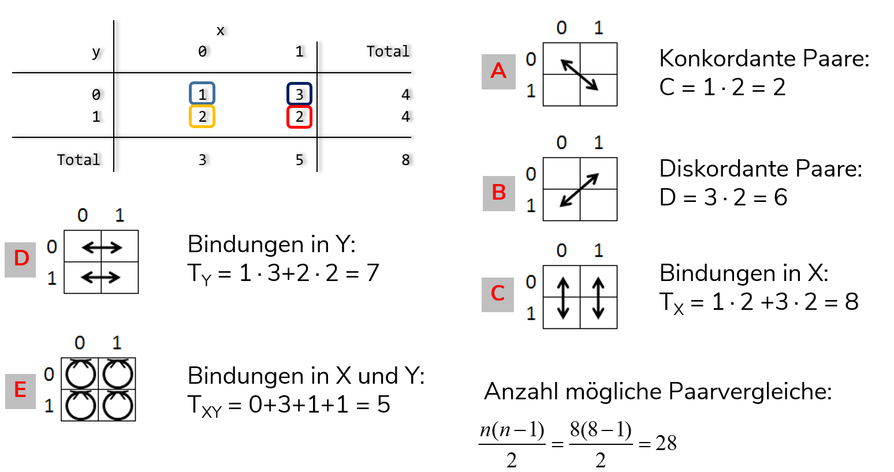

8 Zusammenhangsmaße
Zusammenhänge sind das Herz (fast) aller statistischer Analysen. Im Folgenden lernen wir die Berechnung einer Reihe von Kennzahlen kennen, welche den Zusammenhang zwischen zwei Variablen ausdrücken. Diese variieren je nachdem ob sie nur die Stäke oder auch die Richtung eines Zusammenhangs ausdrücken. Der Abstand zur Null dient dabei als Indikator für die Stärke des Zusammenhangs - je größer der Abstand zur Null, desto stärker der Zusammenhang:
| Wert der Kennzahl (\(K\)) | Grad des Zusammenhangs |
| \(K\) = 0 | Keiner |
| 0,00 ≤ \(K\) < 0,05 | Praktisch keiner |
| 0,05 ≤ \(K\) < 0,25 | Geringer |
| 0,25 ≤ \(K\) < 0,50 | Mittlerer |
| 0,50 ≤ \(K\) < 1,00 | Starker |
| \(K\) = 1,00 | Perfekter |
Zusammenhangsmaße für metrische und ordinale Variablen geben mittels der Vorzeichen auch die Zusammenhangsrichtung an, sie variieren zwischen -1 und +1.
8.1 Metrisch skalierte Variablen
Wir sehen uns den (möglichen) Zusammenhang zwischen dem Alter (zpalter) und der Stundenzahl im Home Office (F321) an.
8.1.1 Korrelationskoeffizient
Zur Bestimmung eines Zusammenhangs zwischen zwei metrischen Variablen empfiehlt sich der Korrelationskoeffizient nach Pearson. Dieser ist definiert als die Kovarianz dividiert durch die jeweiligen Standardabweichungen der beiden Variablen und liegt im Intervall [-1,1]:
\[r = \frac{\frac{1}{n}\Sigma_{i}^{n}(x_i-\bar{x})(y_i-\bar{y})}{\sqrt{\frac{1}{n}\Sigma_{i}^{n}(x_i-\bar{x})^2} \times \sqrt{\frac{1}{n}\Sigma_{i}^{n} (y_i-\bar{y})^2}} = \frac{cov_{xy}}{s_x \times s_y}\]
Ein positiver Korrelationskoeffizient deutet auf einen positiven Zusammenhang hin (“je größer X, desto größer Y”). Ein negativer Korrelationskoeffizient deutet auf einen negativen Zusammenhang hin (“je größer X, desto kleiner Y”). Die Standardabweichung hatten wir in Session 4 kennengelernt, die Kovarianz erfasst die Lage der Datenpunkte relativ zu den Mittelwerten der beiden interessierenden Variablen (liegen Punkte > \(\bar{x}\) auch \(>\bar{y}\)?):
 In der Grafik sind der Übersichtlichkeit halber nur 150 Beobachtungen dargestellt, für diese Auswahl ist liegt der Korrelationskoeffizient bei 0.232.
In der Grafik sind der Übersichtlichkeit halber nur 150 Beobachtungen dargestellt, für diese Auswahl ist liegt der Korrelationskoeffizient bei 0.232.
In Stata können wir den Korrelationskoeffizienten mit pwcorr berechnen. Mit der Option ,sig werden :
pwcorr zpalter F231, sig | zpalter F231
-------------+------------------
zpalter | 1.0000
|
|
F231 | 0.0548 1.0000
| 0.0003
|Es handelt sich mit 0.0548 also um einen geringen Zusammenhang. Der p-Wert gibt uns auch hier wieder Auskunft über die stat. Signifikanz: mit 0.0003 liegt der p-Wert deutlich unter 0,05 \(\Rightarrow\) wir würden hier die Nullhypothese verwerfen, dass die Korrelation in der Grundpopulation gleich Null ist.
8.2 Ordinal skalierte Variablen
Ein klassisches ordinales Merkmal ist die Schulbildung, die wir aus S3 zusammenfassen können (Details im DoFile):
Wir sehen uns den (möglichen) Zusammenhang zwischen der Schulbildung und F600_12 an:
| v | l |
|---|---|
| educ | höchster Schulabschluss |
| 1 | max. Hauptschulabschluss |
| 2 | max. mittlere Reife |
| 3 | (Fach-)Abitur |
| F600_12 | Häufigkeit: unter Lärm arbeiten |
| 1 | häufig |
| 2 | manchmal |
| 3 | selten |
| 4 | nie |
So sieht die Verteilung zunächst in einer Kreuztabelle aus:
tab F600_12 educ Häufigkeit: |
unter Lärm | educ
arbeiten | Haupt m. Reife (Fach-)Ab | Total
-------------+---------------------------------+----------
häufig | 927 1,525 1,631 | 4,083
manchmal | 522 1,130 1,657 | 3,309
selten | 437 986 1,748 | 3,171
nie | 912 2,685 5,565 | 9,162
-------------+---------------------------------+----------
Total | 2,798 6,326 10,601 | 19,725 Auch hier fragen wir uns jetzt: sind die Werte von F600_12 tendenziell höher oder niedriger bei höheren Werten von educ? Allerdings ist hier der Korrelationskoeffizient nicht adäquat, die hier die Abstände zwischen den Kategorien nicht gleichmäßig sind (es handelt sich ja um ordinale Merkmale). Daher müssen hier spezifische Zusammenhangsmaße für ordinale Variablen verwendet werden.
8.2.1 Spearman- Rangkorrelation
Eine Möglichkeit, zur Bestimmung eines Zusammenhangs zwischen zwei ordinal skalierten Variablen ist der Spearman-Rangkorrelationskoeffizient (\(\rho\)). Für den Rangkorrelationskoeffizienten werden die Werte der Variablen in Ränge überführt und dann mit diesen Rängen den Korrelationskoeffizient berechnet. Wir können den Rangkorrelationskoeffizienten mit spearman berechnen:
spearman educ F600_12 Number of obs = 19725
Spearman's rho = 0.1713
Test of Ho: educ and F600_12 are independent
Prob > |t| = 0.0000Es zeigt sich also mit einem Korrelationskoeffizienten von 0.17 ein schwacher, positiver Zusammenhang.
Das positive Vorzeichen des Zusammenhangs deutet darauf hin, dass mit einer höheren Ausprägung von educ tendenziell höhere Werte für F600_12 einher gehen: eine höhere Schulbildung geht mit einem höheren Wert in F600_12 einher.
Da höhere Werte in F600_12 seltenere Belastung angeben sind also Befragte mit höherer Schulbildung seltener von Lärm belastet.
8.2.2 Konkordanzmaße
tab educ mi02 | Häufigkeit: unter Lärm arbeiten
educ | häufig manchmal selten nie | Total
-----------+--------------------------------------------+----------
Haupt | 927 522 437 912 | 2,798
m. Reife | 1,525 1,130 986 2,685 | 6,326
(Fach-)Abi | 1,631 1,657 1,748 5,565 | 10,601
-----------+--------------------------------------------+----------
Total | 4,083 3,309 3,171 9,162 | 19,725 Ein weiteres Zusammenhangsmaß für ordinale Variablen sind Konkordanzmaße wie Kendall’s \(\tau\). Hierfür werden die Werteverhältnisse bzw. Paarvergleiche gezählt. Die Idee ist, dass aus den Tabellenwerten Paarvergleiche gebildet werden können: 
- \(\tau_a\): Differenz der konkordaten (C) und diskordanten (D) Paarvergleiche als Anteil an allen möglichen Paarvergleichen \(\frac{n\times(n-1)}{2}\):
\[\tau_a=\frac{C-D}{\frac{n\times(n-1)}{2}}\] Nachteil: Bei Bindungen in X u. Y Maximalwerte (-1; +1) nicht zu erreichen
- \(\tau_b\): Differenz der konkordaten (C) und diskordanten (D) Paarvergleiche als Anteil an allen möglichen Paarvergleichen \(\frac{n\times(n-1)}{2}\) unter Ausschluss von Bindungen in X und Y
\[\tau_{b}=\frac{C-D}{\sqrt{(C+D+T_x)\times(C+D+T_y)}}\] Nachteil: Bei Bindungen in X o. Y Maximalwerte (-1; +1) nicht zu erreichen
- Goodman & Kruskal’s \(\gamma\) ignoriert die Bindungen vollständig:
\[\gamma=\frac{C-D}{C+D}\]
Zur Berechnung in Stata können wir ktau verwenden:
ktau educ F600_12 Number of obs = 19725
Kendall's tau-a = 0.0965
Kendall's tau-b = 0.1517
Kendall's score = 18770040
SE of score = 780035.599 (corrected for ties)
Test of Ho: educ and F600_12 are independent
Prob > |z| = 0.0000 (continuity corrected)Auch hier zeigt sich eine Zusammenhangsstärke in der gleichen Größenordnung wie beim Rangkorrelationskoeffizienten (\(\tau_a\) = -0.2151 und \(\tau_b\) = -0.3350). Zudem ist auch hier das Vorzeichen negativ: educ korreliert negativ mit mi02. Der Wert von Kendall’s \(\tau_a\) ist deutlich niedriger als von Kendall’s \(\tau_b\), da hier der Nenner durch die Berücksichtigung aller möglichen Paarvergleiche größer wird, der Zähler aber für beide Varianten von Kendall’s \(\tau\) gleich definiert ist.
Ein weiteres Maß ist Goodman & Kruskal’s \(\gamma\), dieses bekommen wir mit der Option ,gamma in tab:
tab educ F600_12, gamma | Häufigkeit: unter Lärm arbeiten
educ | häufig manchmal selten nie | Total
-----------+--------------------------------------------+----------
Haupt | 927 522 437 912 | 2,798
m. Reife | 1,525 1,130 986 2,685 | 6,326
(Fach-)Abi | 1,631 1,657 1,748 5,565 | 10,601
-----------+--------------------------------------------+----------
Total | 4,083 3,309 3,171 9,162 | 19,725
gamma = 0.2338 ASE = 0.009Auch Goodman & Kruskal’s \(\gamma\) deutet auf einen negativen Zusammenhang hin, hier ist die Stärke mit (-0.5065) aber deutlich höher. Dies ist auf die Berücksichtigung der Bindungen zurückzuführen: hier werden alle Bindungen ausgeschlossen, also auch Paarvergleiche mit Bindungen nur auf einer Variable. Es reduziert sich also der Nenner, somit ergibt sich im Ergebnis ein höherer Koeffizient für Goodman & Kruskal’s \(\gamma\) als für Kendall’s \(\tau_b\).
Insgesamt ist also von einem mittleren Zusammenhang zwischen educ und mi02 auszugehen.
8.3 Nominal skalierte Variablen
Unser Beispiel für nominal skalierte Variablen dreht sich um die Frage: Gibt es Geschlechterunterschiede bei der Abgeltung der Überstunden?
Dazu betrachten wir die Variablen F204 und S1:
| v | l |
|---|---|
| F204 | Wie wird Ihre Mehrarbeit bzw. wie werden Ihre Überstunden abgegolten? |
| 1 | durch Auszahlung |
| 2 | durch Freizeitausgleich |
| 3 | durch beides |
| 4 | keine Abgeltung |
| S1 | Geschlecht |
| 1 | männlich |
| 2 | weiblich |
Ausgangspunkt der Zusammenhangsmaße für nominale Merkmale ist die Kontingenztabelle der beiden Variablen (Vorbereitungen im DoFile):
tab S1 F204 Wie wird Ihre |
Mehrarbeit bzw. wie |
werden Ihre | Geschlecht
Überstunden a | männlich weiblich | Total
----------------------+----------------------+----------
durch Auszahlung | 536 400 | 936
durch Freizeitausglei | 1,924 2,308 | 4,232
durch beides | 1,458 873 | 2,331
keine Abgeltung | 1,120 740 | 1,860
----------------------+----------------------+----------
Total | 5,038 4,321 | 9,359 8.3.1 Chi²-basierte Maße
\(\chi^2\) basiert auf dem Vergleich der beobachteten Häufigkeit mit einer (theoretischen) Verteilung, welche statistische Unabhängigkeit abbildet (Indifferenztabelle - mehr dazu). Wir bleiben bei aq03 und dh01. Den \(\chi^2\)-Wert für diese Häufigkeitstabelle bekommen wir mit , chi2:
tab F204 S1, chi Wie wird Ihre |
Mehrarbeit bzw. wie |
werden Ihre | Geschlecht
Überstunden a | männlich weiblich | Total
----------------------+----------------------+----------
durch Auszahlung | 536 400 | 936
durch Freizeitausglei | 1,924 2,308 | 4,232
durch beides | 1,458 873 | 2,331
keine Abgeltung | 1,120 740 | 1,860
----------------------+----------------------+----------
Total | 5,038 4,321 | 9,359
Pearson chi2(3) = 225.4461 Pr = 0.0008.3.2 Cramér’s \(\upsilon\)
Auf Basis dieses \(\chi^2\)-Werts von 225.446 können wir Cramér’s \(\upsilon\) berechnen. Dieses ist definiert als der Quotient aus dem \(\chi^2\)-Wert und der Fallzahl multipliziert mit dem Minimum der Zeilen- und Spaltenzahl. n, erkennen wir aus dem Total rechts unten in der Tabelle. Außerdem hat unsere Tabelle 2 Zeilen und 4 Spalten, dementsprechend entspricht das Minimum hier 2:
\[ Cramer's\,\,\upsilon = \sqrt{\frac{\chi^2}{n \times min(k-1,m-1)}}=\sqrt{\frac{225.4461}{9359\times(2-1)}} = 0.1552\]
Das geht auch einfacher mit der Option , V:
tab F204 S1, V Wie wird Ihre |
Mehrarbeit bzw. wie |
werden Ihre | Geschlecht
Überstunden a | männlich weiblich | Total
----------------------+----------------------+----------
durch Auszahlung | 536 400 | 936
durch Freizeitausglei | 1,924 2,308 | 4,232
durch beides | 1,458 873 | 2,331
keine Abgeltung | 1,120 740 | 1,860
----------------------+----------------------+----------
Total | 5,038 4,321 | 9,359
Cramér's V = 0.1552Dieser Wert für Cramér’s \(\upsilon\) legt einen praktisch keinen Zusammenhang nahe.
Cramér’s \(\upsilon\) für 2x2-Tabellen wird auch als \(\phi\) (“phi”) bezeichnet. Dies wäre das passende Maß für die zusammengefasste Variable aller Haustierbesitzer*innen aq03b von oben und dh01:
\[\phi= \sqrt{\frac{\chi^2}{n}}\] \[\text{bei k=2 und m=2:}\qquad Cramer's\,\,\upsilon = \sqrt{\frac{\chi^2}{n\times min(k-1,m-1)}}=\sqrt{\frac{\chi^2}{n\times\,1}}\]
8.4 Welches Maß richtig?
Wir haben jetzt eine ganze Reihe an Zusammenhangsmaßen kennengelernt, die folgende Liste fasst nochmal alle Varianten zusammen. Es gibt noch eine ganze Reihe weiterer Zusammenhangsmaße und diese Liste deckt lediglich die Maße ab, die wir kennengelernt haben:
nominal skalierte Variablen
Odds Ratio: basierend auf Kreuztabelle
tab x y\(\chi^2\)-basierte Maße
tab x y, chi, danach Division von \(\chi^2\) durch n und Zahl der Spalten/Zeilenordinal skalierte Variablen
Spearman-Rangkorrelationskoeffizient
spearman x y- Konkordanzmaße
- Kendall’s \(\tau_a\) & Kendall’s \(\tau_b\):
ktau x y - Goodman & Kruskal’s \(\gamma\):
tab x y, gamma
metrische skalierte Variablen
- Zusammenhangsstärke: Pearson-Korrelationskoeffizient
corr x y - Regression zur Vorhersage von Werten auf Basis einer Variable:
reg x y
- Zusammenhangsstärke: Pearson-Korrelationskoeffizient
Ausschlaggebend ist dabei die Variable mit dem niedrigeren Skalenniveau! Ggf. können metrische Variablen durch Kategorisierung (Kapitel 6) in ordinale Variablen überführt werden.
8.5 Übungen 8
- Laden Sie die Erwerbstätigenbefragung in Stata.
8.5.1 Übung 8-1
- Untersuchen Sie den Zusammenhang zwischen der Wochenarbeitszeit und dem Einkommen der Befragten. Welches Maß ist das richtige?
- Denken Sie daran, die Missings mit
mv
- Untersuchen Sie den Zusammenhang zwischen der Häufigkeit von starkem Termin- oder Leistungsdruck
F411_01und der dreistufigen Schulbildungsvariableeduc.
- So können Sie
educerstellen:recode S3 (2/4 = 1 "Haupt")(5/6 = 2 "mittlere Reife") (7/9 = 3 "(Fach-)Abi") (else = .), into(educ) - Denken Sie daran, die Missings in
F411_01zu überschreiben:mvdecode F411_01, mv(9) - Berechnen Sie ein oder mehrere geeignete Zusammenhangsmaße für diese beiden Variablen.
8.5.2 Übung 8-2
- Untersuchen Sie den Zusammenhang zwischen der Frage, ob der*die Befragte teiweise von zu Hause aus arbeitet (
F228) und ob die Befragten gerne eine andere als ihre aktuelle Tätigkeit (F103) ausüben würden.
- In beiden Variablen ist
9als fehlender Wert auszuschließen
8.6 Anhang
8.6.1 Indifferenztabelle
\(\chi^2\) ergibt sich aus der Differenz zwischen der Indifferenztabelle und den beobachteten Häufigkeiten. Die Indifferenztabelle können wir mit ,expected aufrufen (mit nofreq blenden wir die tatsächlichen Häufigkeiten aus):
tab F204 S1, expected nofreq | Geschlecht
F204 | männlich weiblich | Total
----------------------+----------------------+----------
durch Auszahlung | 503.9 432.1 | 936.0
durch Freizeitausglei | 2,278.1 1,953.9 | 4,232.0
durch beides | 1,254.8 1,076.2 | 2,331.0
keine Abgeltung | 1,001.2 858.8 | 1,860.0
----------------------+----------------------+----------
Total | 5,038.0 4,321.0 | 9,359.0 Ausgangspunkt für diese Indifferenztabelle sind die relativen Häufigkeiten der tatsächlich beoachteten Werte:
tab F204 S1, cell nofreq | Geschlecht
F204 | männlich weiblich | Total
----------------------+----------------------+----------
durch Auszahlung | 5.73 4.27 | 10.00
durch Freizeitausglei | 20.56 24.66 | 45.22
durch beides | 15.58 9.33 | 24.91
keine Abgeltung | 11.97 7.91 | 19.87
----------------------+----------------------+----------
Total | 53.83 46.17 | 100.00 Uns interessieren hier nur die Randverteilungen aus Sum: 45.22 % aller Befragten bekommen ihre Überstunden (ausschließlich) durch Freizeitausgleich ausgeglichen (F204=2). 46.17 % aller Befragten sind Frauen (S1 = 2).
| männlich | weiblich | Total | |
|---|---|---|---|
| durch Auszahlung | A | E | 0.1 |
| durch Freizeitausgleich | B | F | 0.4522 |
| durch beides | C | G | 0.2491 |
| keine Abgeltung | D | H | 0.1987 |
| Total | 0.5383 | 0.4617 | 1 |
Wären beide Merkmale unabhängig voneinander, würden wir erwarten, dass die Wahrscheinlichkeit für das Auftreten einer Merkmalskombination dem Produkt der Einzelwahrscheinlichkeiten entspricht (das ist die “Indifferenz”): \(P(A\cup B) = P(A) \times P(B)\). Bspw. ergibt sich der erwartete Wert für die Zellen dann aus der relativen Randverteilung multipliziert mit der Gesamtfallzahl:
für Zelle
B:0.4522\(\times\)0.5383\(\times\) 9359 = 2278.1083.für Zelle
H:0.1987\(\times\)0.4617\(\times\) 9359 = 858.752.
Dies sind auch die Werte, die Stata uns oben mit tab F204 S1, expected nofreq ausgegeben hatte.
\(\chi^2\) ist dann die summierte Differenz zwischen dieser Indifferenztabelle (also der erwarteten Verteilung bei Unabhängigkeit beider Merkmale) und den beobachteten Häufigkeiten: je größer die Differenz, desto unwahrscheinlicher ist es, dass beide Merkmale unabhängig sind.